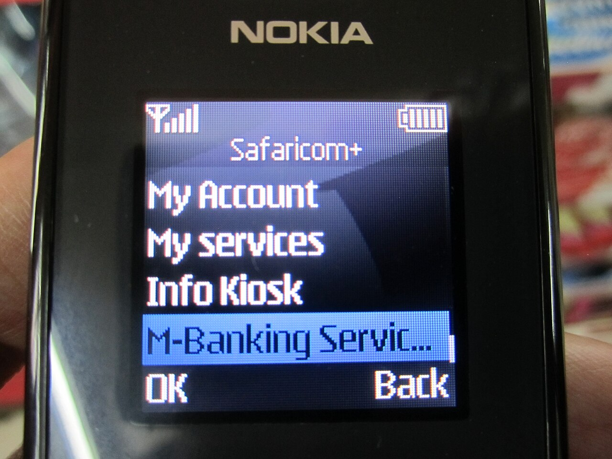
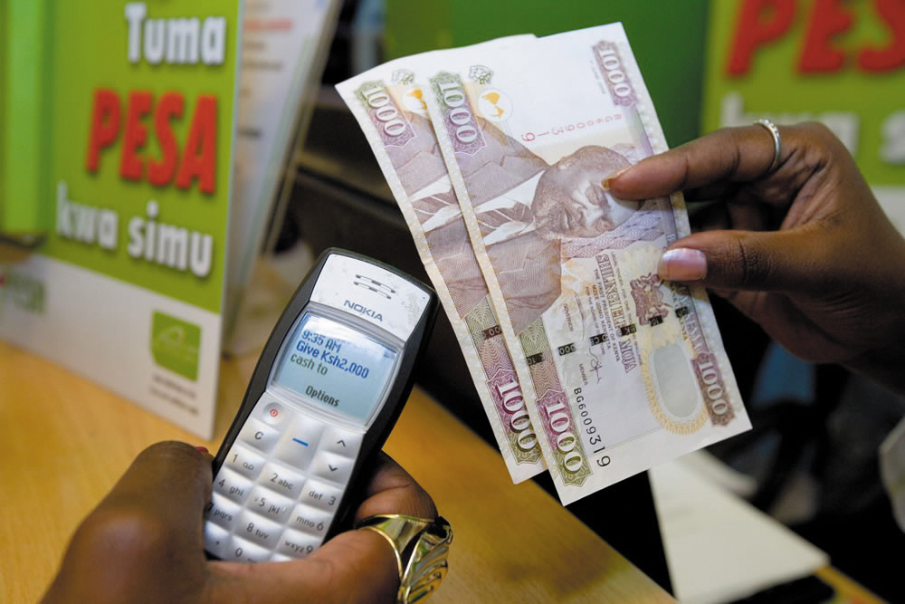
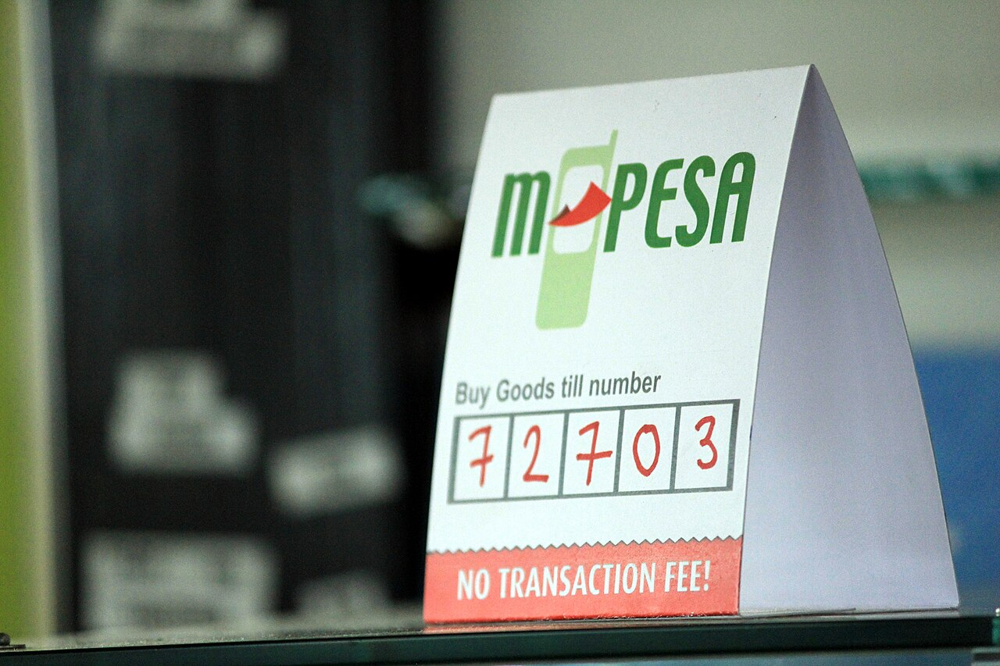

Case study 6 · M-Pesa (Kenya) · visual study
M-Pesa: payments for people without a bank or a smartphone
Launched in Kenya in 2007, it sends money by text menu on any phone. Two peer-reviewed studies measured what it did to people’s lives: users didn’t cut spending when a bad shock hit, and it lifted about 194,000 households (2%) out of extreme poverty.
- A
- Controlled test (A/B, holdback)
- B
- Insider number, no method given
- C
- Expert analysis, no data
- D
- Dated, news or unverifiable
The SIM menu · photo, 2013
No app, no internet: a text menu on any phone C

12- 1The money service is one line in the phone’s SIM menu. It lives on the SIM card, so it works on the cheapest phone.
- 2Two buttons: OK and Back. Every step is a short list or one field to fill.
Safaricom’s own steps for sending money: open M-PESA → Send Money → enter phone number → enter amount → enter PIN. Five short screens, each asking one thing. The receiver needs no app either: they get an SMS.
our note This is the same principle as Monzo’s sign-up (step 1 there) taken to the extreme: the less the person has (phone, data, bank), the fewer things the flow can ask of them.
Evidence Photo by Ivan Small (CC BY-SA 2.0); steps from Safaricom’s help page. No Safaricom design write-up found (C). Safaricom, Using M-PESA
Agents · photos, Nairobi
People are the ATM: 110,000 agents vs 2,700 ATMs C

1- 1The SMS says what to do: “Give Ksh2,000 cash to…”. The message itself is the receipt and the instruction to the agent.

Phone money is useless if you can’t turn it into cash. M-Pesa’s answer was agents: shops, kiosks and chemists that take your cash and top up your phone, or the other way round. By 2016 Kenya had 110,000 agents and only 2,700 ATMs, and at least one person in 96% of households used M-Pesa.
our note The design here isn’t a screen, it’s a network of people. The research below measures M-Pesa by how close you live to an agent, not by app use.
Evidence Numbers from the Science paper’s introduction (A). Photos CC BY-SA / CC BY. Suri & Jack, Science, 9 Dec 2016
Lipa na M-Pesa · photo, 2012
Paying a shop: five digits, no QR code C

12- 1The shop’s till number, written by hand: 7 2 7 0 3. You type it in the menu under “Buy Goods”.
- 2“No transaction fee!” for the customer, said loudly at the counter.
A till number works on any phone and can be written on paper. A QR code needs a camera phone. The trade-off: typing five digits is slower and easier to get wrong than scanning.
our note Compare with PhonePe (step 1), which moved the scanner under your thumb, and our Idea 001. India chose the camera; Kenya started with the keypad. Each fits the phones people actually had.
Evidence Photo by Raidarmax, CC BY-SA 3.0. Describes the design, no data (C). Wikimedia Commons

Jack & Suri · American Economic Review, 2014
When a bad week hits, users don’t cut spending A
From the paper’s abstract. Bars show the size of the drop; scale 0–10%.
Why: when something goes wrong, M-Pesa users received more money, in bigger amounts, from more different people. Sending money to a relative in a village used to mean a bus ticket or a trusted traveller. Now it’s a text.
The study followed households over about three years as M-Pesa use went from 43% to 70% of households and agents grew four-fold. A test on data from before M-Pesa existed backs the result.
our note This is the most human result in the whole site: the value of a payment app isn’t speed at the counter, it’s that your family can reach you in a bad week.
Evidence Peer-reviewed, panel data the authors collected, with a falsification test (A). Numbers from the working-paper version. Jack & Suri, AER 104(1), 2014
Suri & Jack · Science, 2016
194,000 households out of extreme poverty A
Interquartile effects from the paper. Grey = a fall. Scale 0–25%.
Across Kenya, the authors estimate M-Pesa lifted at least 194,000 households (2%) out of extreme poverty and led 185,000 women to move from farming into business or retail. The effect was more than twice as large for households headed by women. For male-headed households, it was close to zero.
How they measured it: 1,608 to 3,000 households surveyed five times, 2008–2014, comparing people whose nearest agents grew with people whose didn’t.
our note Not settled. Critics (Bateman, Duvendack & Loubere, 2019) argue there’s no real control group, so the effect can’t be pinned on M-Pesa alone. The study also lost 35% of households over six years. We keep the grade at A for method and publication, with that caveat.
Evidence Peer-reviewed in Science; natural experiment, not a randomised trial; disputed (A, contested). Suri & Jack, Science 354(6317), 2016
M-PESA app · 2021 and 2026
The smartphone app came later, and struggled D
In June 2021 Safaricom launched an M-PESA “super app” with mini-apps, openly modelled on Alipay and WeChat, but built to be light on data and to work offline. An industry analyst wrote that functionality issues disappointed users and slowed adoption. In April 2026, a merged “My OneApp” replaced the M-PESA app for millions of users, and drew criticism of its design.
our note The same lesson as PhonePe (step 3) and Monzo (step 6): a payment habit is hard to move. M-Pesa’s strength was a menu that never changed for years.
Evidence News and analyst commentary only, no data from Safaricom (D). Mondato; The Star, 2021 and 2026
Honest gap
What we couldn’t find
No design case study from Safaricom. The menu and agent steps rest on photos and help pages, not on design research. No screenshots of the full send-money flow under a free licence; the best walkthrough we found (Medium) blocked us. The 2014 numbers come from the authors’ working-paper copy; the journal version may differ slightly. The research is about Kenya 2008–2014; today’s M-Pesa is a different product.
Where the evidence and photos come from
- Science 2016: The long-run poverty and gender impacts of mobile money (Suri & Jack), open PDF.
- AER 2014: Risk sharing and transactions costs: evidence from Kenya’s mobile money revolution (Jack & Suri), MIT open-access copy.
- Critique: The curious case of M-Pesa’s miraculous poverty reduction powers (Bateman, Duvendack & Loubere).
- App: Super app launch, 2021; Mondato analysis; My OneApp, 2026. Steps: Safaricom help.
- Photos, Wikimedia Commons: menu (Ivan Small, CC BY-SA 2.0), Nokia SMS (Rosenfeld Media, CC BY 2.0), agent (Fiona Graham, CC BY-SA 2.0), till (Raidarmax, CC BY-SA 3.0). Pins and notes are ours.